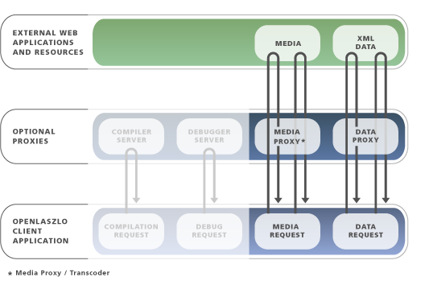

FIXME: When compiling for DHTML, you should ensure that gzipping is turned on at the server. This is done automatically for swf files, but not for DHTML.
FIXME: Regarding the SOLO deploy wizard, it just zips everything in the applications directory, because the system doesn't know what resources etc might be needed by the app at runtime. So the expedient solution was to grab everything in the same directory.
As explained in Chapter 1, OpenLaszlo Architecture, there are two distinct ways in which OpenLaszlo applications can be deployed, that is, made available on the web: proxied by the OpenLaszlo Server, or SOLO -- as a standalone application.
The implementation of proxied and SOLO deployment models differs depending on the target runtime. In particular, pay attention to the discussion of accessing remote resources.
FIXME: NEED INFO ON SOLO dhtml deployment!
Deploy SOLO (Standalone OpenLaszlo Output) from any HTTP Web server
Deploy with OpenLaszlo Server
With SOLO deployment, the LZX source is pre-compiled into a either a stand-alone SWF file that can be placed within the HTML docs directory of a common HTTP Web Server (such as Apache or IIS), or to a JavaScript file. SOLO deployments are simple to manage, and supported by nearly any Web hosting service, such as Apache.
Colloquially, SOLO deployment is sometimes called "serverless," because the OpenLaszlo Server is not required for operation of the application.
OpenLaszlo Server deployment is also called "proxied" deployment, because the OpenLaszlo server is always running, and it mediates, or proxies, communication between the OpenLaszlo application running on the client machine and any back-end services or resources located elsewhere on the web.
In SOLO deployments, the OpenLaszlo server is not used to mediate between the OpenLaszlo client application and other services on the web. However, as explained below, it is possible to use other services to proxy between the client application and web resources.
Figure 25.2. After they have been deployed, SOLO applications do not contact the OpenLaszlo Server

With OpenLaszlo Server ("proxied") deployment, you place the LZX source (.lzx) file within the Web-apps directory of the OpenLaszlo Server. The first time you browse to that file it is dynamically compiled, and it is automatically recompiled whenever the source changes. (You refresh the page to force the recompilation.) OpenLaszlo Server deployment requires a Java Application Server or servlet container. It provides additional capabilities dependent on the server, including support for SOAP, XML-RPC, and Java-RPC.
In applications compiled to SWF, The OpenLaszlo Server is also required to transcode resources in media formats that are not natively supported by the Flash Player. The OpenLaszlo Server transcodes these media files "on the fly" into formats supported by the Flash Player.
Deploying SOLO is generally more convenient than deploying with OpenLaszlo Server, and often gives better performance.
The decision about whether an OpenLaszlo application will be deployed proxied or SOLO can sometimes be made by the system administrator responsible for making the application available on the web. When an application does not make use of any features that require the presence of the OpenLaszlo Server, the same source file can be used to create either proxied or SOLO executable files. In this case the decision between proxied and SOLO deployment can be made at deployment time, and the deployment model is determined by the request type on the URL used to specify the file, as explained below.
Most often, however, it will be you, the developer, who must decide on the deployment
method. This is because you will know whether the application relies on the OpenLaszlo Server, and if it does rely on the server (and thus
must be deployed proxied) you may
want to make some internal optimizations that rely on this fact. In such cases the application may contain proxied="true"
in the <canvas>[unknown tag]
tag, which means that trying to deploy it SOLO will generate an error.
How do you decide whether to target proxied or SOLO deployment? Here is a heuristic:
Do you have the option of installing the OpenLaszlo Server on a deployment server? In particular, is there a Java Application Server or servlet container available? If not, you must deploy SOLO.
Does your application require services available only in proxied applications? If yes, you must deploy with OpenLaszlo Server.
If your application can be deployed in either manner, which gives the best performance?
Each of these considerations is described briefly below.
The decision about whether to deploy an application proxied or unproxied may happen late in the development process, possibly following performance measurement on the two modes of operation for that particular application.
It is desirable to share libraries between applications that are designed for proxied operation, and applications that are designed for unproxied operation. To the extent that these libraries can operate in either mode, it is desirable to make them usable, without source modifications, in either kind of application.
Note that the default behavior is proxied. See below.
As explained in the OpenLaszlo System Administrator's Guide, deploying proxied OpenLaszlo applications requires that you install a J2EE application server or servlet container. OpenLaszlo comes with the Tomcat servlet container included, but, depending on how you have access to the web, it may not be practical or even possible for you to use this to make your applications generally available. So, before you decide to start development of an OpenLaszlo application for, say, a hobby website, you should find out whether your ISP provides the capability for you to install a servlet container. If this is not practical for you, you can still develop and deploy SOLO applications.
Access to the OpenLaszlo Server is required for certain run-time features, such as SOAP and XML-RPC requests, and for processing certain types of media files.
Here is a list of features that require OpenLaszlo Server:
media types other than SWF, JPG, or MP3
SOAP
XML-RPC
http response headers in XML requests
If your application relies on any of these features, you cannot deploy it SOLO.
In addition, there are differences between how proxied and SOLO applications handle some kinds of XML data and http responses. See below.
If either deployment manner is available to you, the decision may come down to which works better. You should do test deployments under each method and see which gives the faster performance.
When compiling for DHTML, you should ensure that gzipping is turned on at the server. This is done automatically for DHTML files, but not for DHTML. See the OpenLaszlo System Administrator's Guide for details.
The data transfer size and run-time performance may be bigger or smaller, faster or slower. If gzipped data is desired, for SOLO deployment, the XML services will need to gzip the data (since the OpenLaszlo Server will no longer be in the picture). Note that it's not necessary to gzip the swf file; SWF files are internally gzip compressed by the compile process. It would be redundant to have the web server compress them as well.
By default, the OpenLaszlo proxy server ships "wide open", which can be a security hazard. See the OpenLaszlo System Administrator's Guide, for a discussion of OpenLaszlo security management.
If an application is compiled for proxied operation, all data and media requests are proxied and the remote procedure calls (RPC) tags are supported.
If the canvas contains the proxied="false" attribute, that means the application will be deployed SOLO.
Data and media requests are unproxied, and the compiler performs
error detection:
All data and media requests are unproxied.
The presence of the <connection> or RPC tag results in a compiler warning.
The presence of e.g. <view resource="http:logo.png"/>, where the compiler can easily infer that the value of the resource attribute
will result in a runtime request for a media type that is not supported in an unproxied media request, results in a compiler warning.
A runtime request for an unsupported service (e.g. myView.setResource('http:logo.png')) will result in a debugger warning, if debugging is enabled.
The <canvas> tag has an optional attribute proxied="true|false|inherit", which defaults to "inherit".
If proxied="true|false", the application can only be compiled in that mode.
It is an error to provide a request parameter with a different compiler setting, and the developer console UI disables options that
generate this request. If proxied="inherit", the application is compiled either for proxied or unproxied operation,
depending upon the
value of a compilation switch (which defaults to unproxied).
In other words, a canvas file may include only library files that have the same value for their proxied attribute, or the (default)
value of "inherit". You can't mix and match, and the presence of the <library> proxied attribute is a way to
document to developers and to the compiler that a library can only work in one mode of operation.
When loading data, SOLO applications do not provide a way to access http headers.
Also note that the client system not provide any useful error messages when your data has problems in it, whereas the OpenLaszlo Server can provide clues to what's going on. This another reason why it's best to first develop and test your programs as proxied applications, and then make them SOLO.
It does cost more in terms of CPU time to strip namespace prefixes (you
control
this with the nsprefix attribute on <dataset>[unknown tag]
) , and it costs more to trim
whitespace.
The current defaults are:
nsprefix = false (namespace prefixes are stripped) trimwhitespace = true (leading and trailing whitespace is removed from text nodes)
Whether you're working on proxied or on SOLO applications, you will need to have the OpenLaszlo server installed on your development machine. The server is invoked during the edit-compile-debug cycle, as explained in Chapter 4, Overview of OpenLaszlo Application Development. That means that the server is here to stay as a developer tool.
There are two ways to specify whether an application is compiled for proxied operation: the 'lzproxied' query parameter,
and the proxied attribute of the <canvas> document root element. Either of these can specify that the application is proxied,
that it is SOLO (unproxied), or that whether it is proxied is determined by another source. If both of these mechanisms are used, they
must agree, otherwise it is a compiler error (for example, a ?proxied=true request for an application that contains
<canvas proxied="false">). If neither is used, the application is proxied.
Because the OpenLaszlo Server contains the compiler, developing and deploying steps can be intertwined, depending on the values of certain parameters. Various options are presented here and summarized below.
For security (to prevent malicious use), the Flash player (for applications compiled to SWF) or the browser (for applications compiled to DHTML) requires that programs demonstrate that they have permission to access any files that they reference. Depending on where the data originates and whether your application is compiled to SWF or DHTML, you have various options for doing this this.
If the files originate from the same domain as the application, access is allowed.
In applications compiled to SWF, if the files do not originate from the same domain as the application, there must be a crossdomain.xml file at the top level of the domain from which they are served.
In applications compiled to DTHML, if the files do not originate from the same domain as the application, access is denied.
For instance, say you have an OpenLaszlo application that uses art assets from a remote source:
<resource name="prettypicture" src="http://someURL/picture.gif">
where someURL is different from where the application is served. In applications compiled to SWF, the file can be accessed if a crossdomain policy is in effect. Applications compiled to DHTML cannot access the file.
Applications that are proxied do not have this problem, since the OpenLaszlo server proxies all requests, and therefore from the point of view of the application on the client, all data is coming from the same place.
Flash requires that a properly configured crossdomain.xml file be present at the top level of that domain to give you permission to access the file. For complete instructions on how to do this, see the Macromedia documentation. A representative example follows here.
The Flash security model is tricky, and several different issues may come into play when deploying an OpenLaszlo application that accesses data from a separate server, even if it resides on the same host. For OpenLaszlo applications that will be deployed as SOLO SWF, you can add a crossdomain.xml file to the server, as follows:
1. Put a crossdomain.xml on the data server with this code:
<?xml version="1.0"?> <!DOCTYPE cross-domain-policy SYSTEM "http://www.macromedia.com/xml/dtds/cross-domain-policy.dtd"> <cross-domain-policy> <allow-access-from domain="*" /> </cross-domain-policy>
Using 'domain="*"' is very liberal; it gives access to this file to any program. you can tighten the settings to be more specific to the OpenLaslzo application.
2. Put this code in your OpenLaszlo application:
<script>
System.security.loadPolicyFile("http://[server]/crossdomain.xml");
</script>
Where "server" is the name of the directory in which the crossdomain file resides.
Older versions of the Flash player do not recognize the crossdomain.xml file when asked to do POST requests, but do recognize it for querystrings. If this situation arises, you will have to upgrade your Flash player to version 7,0,68,0 or higher in order to make POSTs.
In SOLO applications compiled to DHTML, the application and the data do not originate at the same URL, the data load will fail. This is a consequence of the XMLHTTPRequest() object, which enforces this policy. There are browser-specific workarounds to this problem, but they are nonstandard and not recommended.
If the file is coming from the same server as the application, you can use Firefox's LiveHTTPHeaders to monitor what actual request is being made to the server, this is often instructive.
The development process for serverless applications is a simple variation on the usual Laszlo cycle:
Develop the application using OpenLaszlo Server
Compile static (.swf) files
Place application files on web server
Compiling dir/canvas.lzx creates the file dir/canvas.lzx.swf.
There are two ways to compile an application to be deployed SOLO:
Precompiling the application by invoking the compiler from the command line
Compiling the application using OpenLaszlo Server and specifying unproxied deployment, as explained below.
The compiler resides in the directory:
4.9.1#/bin
Invoke the compiler with the command:
lzc filename.lzx
This will result in creation of the file:
filename.swf
in same directory as the source. The compiled file can be deployed by any application server, such as Apache.
Alternatively you can cause the compilation as a side effect of requesting unproxied deployment, as explained in the next section.
FIXME: SOLO Deploy "Wizard". 1) recursive copy of all files in the directory in which the app resides, and also includes 2) An html wrapper file (app.swf.html) 3) these include files filenames.add("lps/includes/embed.js"); filenames.add("lps/includes/h.html"); filenames.add("lps/includes/h.swf"); filenames.add("lps/includes/vbembed.js");
You can specify deployment by using:
the lzproxied query parameter to the lzx request type in the URL, for example http://somedomain.com/laszlo-app.lzx?lzproxied=false
the proxied attribute in the <canvas> tag.
the query parameter and attribute together.
Requesting a SOLO application /path/to/canvas.lzx has the side effect of creating a file /path/to/canvas.lzx.swf. This file, or the
directory that contains this file, can be copied to the htdoc directory of a server that doesn't include the OpenLaszlo Server.
The file is called canvas.lzx.swf instead of canvas.swf to preserve OpenLaszlo "branding"—just as the presence of .php or .jsp in
a URL is good for the awareness of PHP and Java, even though .htaccess can be configured not to require this filename extensions in the URL.
This also makes it less likely that compiling an application (for example, logo.lzx) will overwrite a file that it includes
(if logo.lzx includes
logo.swf).
The file is placed in the same directory as the source file so that relative references to datasets and media requests will work.
The proxied attribute on the <canvas> tag can take the following values:
true: the application is proxied by the OpenLaszlo Server
false: the application is not proxied
inherit: the value is determined by the lzproxied query parameter
The query parameter to the application request URL, for example 'http://lps-3.0/hello.lzx', specifies whether the application
is compiled for proxied or unproxied operation. The lzproxied parameter can take the values true and false.
If true, the application is proxied by the OpenLaszlo Server.
If false, the application is deployed SOLO.
Add a query parameter, 'lzproxied', to the application request URL. For example,
'http://lps-3.0/hello.lzx?proxied=true'. Like the 'debug' query parameter, this parameter acts as a compiler option, and
affects the way an application is compiled.
| lzproxied query parameter | <canvas proxied=> | Result |
|---|---|---|
| not present | not present | proxied |
| not present | inherit | proxied |
| not present | true | proxied |
| not present | false | unproxied |
| true | not present | proxied |
| true | inherit | proxied |
| true | true | proxied |
| true | false | error |
| false | not present | unproxied |
| false | inherit | unproxied |
| false | true | error |
| false | false | unproxied |
The existence of the query parameter means that an application can work in either proxied or SOLO mode, can be compiled for either mode without changes to its source code. In particular, this makes it easy to compare the proxied and unproxied operation of an application, and to hold off on committing to the deployment mode for an application.
The existence of the query parameter also makes it possible to implement an HTTP-based user interface (in the form of additional controls on the developer console) for specifying compiler options.
It is also consistent with the debug and runtime target compiler options.
See Chapter 35, Browser Integration for a discussion of how to deploy OpenLaszlo applications within HTML pages. Here's a summary of how this process needs to be modified for SOLO applications.
If you are deploying a SOLO application using LzEmbed and wish to pass parameters down to the application from the base URL, you need to make some modifications to the stock html wrapper page that the server provides.
Here is an lzEmbed line that passes all of the query parameters down to the OpenLaszlo application undamaged:
lzEmbed({url: 'main.lzx.swf?'+window.location.search.substring(1), bgcolor: '#ffffff', width: '100%', height: '100%'});
The thing that's different is the alteration to main.lzx.swf? from main.lzx?lzt=swf and the addition of
'+window.location.search.substring(1)'
During development, an HTTP request for a SOLO application that is backed by /path/to/canvas.lzx may cause the compiler
to create a file /path/to/canvas.lzx.swf (the object file). Recompilation occurs when all of the following conditions are true:
The allowRecompile OpenLaszlo Server configuration property is true or always
The compMgrDependencyOption OpenLaszlo Server configuration property is not never
One or more of the following conditions is true:
The object file does not exist
The object file is older than any of the application source files
The value of the allowRecompile property is always
An HTTP request for a SOLO application returns the object file from the source directory instead of from the OpenLaszlo Server cache.
Using the OpenLaszlo Server, request the application URL.
Copy the .lzx.swf file to a directory on the deployment server.
This is necessary to deploy an application that consists of several deployment files; for example, data and media files in the source directory that are requested during application execution.
Using the OpenLaszlo Server request the application URL.
Copy the source directory to the deployment server.
You can chose whether or not to make visible the source code to your application. When you want to make sure that your source is not available, do this:
Using the OpenLaszlo Server, request the application URL.
Make a copy of the source directory. The copy is the "staging directory".
Remove all .lzx files from the staging directory.
Remove any other data and media files that are not referenced during application execution.
Copy the staging directory to the deployment server.
Here are examples of applications that do not require the OpenLaszlo server at run time:
<canvas proxied="false">
<datasource name="ds" src="http:data.xml" request="true"/>
<text datapath="ds:/root/text()"/>
</canvas> |
<canvas proxied="false">
<include href="lib-ds-unproxied.lzx"/>
</canvas> |
<canvas proxied="false">
<include href="lib-ds-default.lzx"/>
</canvas> |
with these support files:
lib-ds-proxied.lzx:
<library proxied="true">
<datasource name="ds" src="http:data.xml" request="true"/>
<text datapath="ds:/root/text()"/>
</library> |
lib-ds-unproxied.lzx:
<library proxied="false">
<datasource name="ds" src="http:data.xml" request="true"/>
<text datapath="ds:/root/text()"/>
</library> |
lib-ds-default.lzx:
<library proxied="default">
<datasource name="ds" src="http:data.xml" request="true"/>
<text datapath="ds:/root/text()"/>
</library> |
These programs create applications that use the OpenLaszlo Server to proxy the dataset request:
<canvas proxied="true">
<datasource name="ds" src="http:data.xml" request="true"/>
<text datapath="ds:/root/text()"/>
</canvas> |
<canvas proxied="true">
<include href="lib-ds-proxied.lzx"/>
</canvas> |
<canvas proxied="true">
<include href="lib-ds-default.lzx"/>
</canvas> |
Compiler errors are returned for these cases:
A proxied canvas that includes an unproxied library:
<canvas proxied="true">
<!--Error:proxied canvas that includes an unproxied library:-->
<include href="lib-ds-unproxied.lzx"/>
</canvas> |
A unproxied canvas that includes a proxied library:
<canvas proxied="false">
<!--Error:A serverless canvas that includes a proxied library-->
<include href="lib-ds-proxied.lzx"/>
</canvas> |
Media requests use the global canvas attribute.
These programs make media requests through the server:
<canvas proxied="true">
<view src="http:logo.jpg"/>
</canvas> |
<canvas proxied="inherit">
<view src="http:logo.jpg"/>
</canvas> |
This example shows a data request that is mediated by the OpenLaszlo Server:
<canvas>
<view src="http:logo.jpg"/>
</canvas>This program makes a direct (serverless) media request:
<canvas proxied="false">
<view src="http:logo.jpg"/>
</canvas>Unlike proxied applications, SOLO applications require URLs to be relative. This means that absolute URLS that you use when developing your program no longer work when you deploy it unless you edit them. You can get around this problem by storing URLs in an external XML file. When you switch from proxied to SOLO, you merely switch out that file; you don't have to touch the code.
The example below shows how to load dataset URLs from an external XML file called paths.xml.
This is the code in "canvas":
Example 25.1. Storing URLS in an external file
<dataset name="ds_paths" request="true" type="http" src="paths.xml" />
<dataset name="ds1"/>
<datapointer xpath="ds_paths:/paths/ds1">
<handler name="ondata">
parent.ds1.setAttribute( 'src', this.getNodeText() );
</handler>
</datapointer>
<dataset name="ds2"/>
<datapointer xpath="ds_paths:/paths/ds2">
<handler name="ondata">
parent.ds2.setAttribute( 'src', this.getNodeText() );
</handler>
</datapointer>
<dataset name="ds3"/>
<datapointer xpath="ds_paths:/paths/ds3">
<handler name="ondata">
parent.ds3.setAttribute( 'src', this.getNodeText() );
</handler>
</datapointer>
The contents of paths.xml looks something like this:
Example 25.2. XML file to hold URLS
<paths> <ds1>http://www.domain.com/dsservlet/getds1</ds1> <ds2>http://www.domain.com/dsservlet/getds2</ds2> <ds3>http://www.domain.com/dsservlet/getds3</ds3> </paths>
The OpenLaszlo server can perform a lot of different functions, including transcoding, proxying and compiling programs, not all of which are needed by every application. In fact, most applications need none of these functions, which is why they can be run SOLO. However, in some cases you may need proxying without all the other things the go with the OpenLaszlo Server. In such cases you may consider creating a proxy of your own.
It's possible to write proxies and transcoders in other languages, so you only really need the OpenLaszlo server if you want to dynamically compile OpenLaszlo programs on the fly. Python, Ruby, Java and PHP all work well for writing proxies and transcoders, depending on the kind of data formats you need to work with. Of course, using the OpenLaszlo Server is easier then writing your own from scratch, but if you need to do so, there is nothing in the OpenLaszlo architecture that prevents that.
The OpenLaszlo source code depends on a bunch of stand-alone Java libraries for manipulating Flash files, XML and images, which (if you're using Java) you could use in your own applications without incorporating the entire OpenLaszlo server.
One thing the OpenLaszlo server does that you can implement in other ways is transcoding media. Different versions of the Flash player only support certain types of media, so if you want to load a gif image from another server whose content you don't have control over (for example, a gif thumbnail of a person from a social networking site), then you need a server somewhere to transcode it from gif to something the flash player can read like SWF or PNG. A lot of scripting languages support the "ming" dynamic SWF generation toolkit, and there are other libraries like Python's "flashticle" for reading and writing Flash content on the fly (including swf and flv).
Another service provided by the OpenLaszlo server is performing SOAP and XML/RPC requests on behalf of the OpenLaszlo client. It's easiest to use ReST instead of SOAP and XML/RPC, since it's so much less complicated and lets you tailor the XML for your particular application (simplifying the XML to make data binding to visual OpenLaszlo classes more direct, resulting in less processing and simpler code on the client). But if there's an existing SOAP or ReST service you have to use, then you can write a proxy on the server to translate between simple ReST requests from OpenLaszlo to more complex remote procedure calls. This lets you do some processing and filtering and multiple requests on the server side (where the network's lightning fast), so you can have a more efficient client/server protocol (because that goes through skinny pipes to the client, so it should be optimized, where remote procedure calls from server to server across the backbone can send lots of fluffy data quickly and don't need to be boiled down to the bare essentials).
A great example of this philosophy in action is the Cooqy OpenLaszlo interface to eBay, which lets you browse eBay efficiently over a low-bandwidth dial-up line. The Cooqy server talks to the eBay web API, and boils it down to the essential results to display in the OpenLaszlo client, which downloads XML and images incrementally and starts displaying results immediately. So the client/server protocol between the client and Cooqy is extremely efficient, while the server/server protocol between Cooqy and eBay runs between fast servers over the Internet backbone.
You can see the Cooqy program in action here.
Rich object oriented interfaces like the eBay web service API aren't always the right level of abstraction for the most efficient client/server communication. So there are some good reasons to make a proxy server that boils everything down to your own application specific XML format, instead of trying to mash together a whole bunch of complex general purpose APIs in the client. Cooqy does a great job of distributing the processing and network load so it works well over a low speed network connection, so it's much more efficient that the equivalent html pages. Plus it doesn't hurt that the entire Cooqy application is smaller than eBay's html home page!
The other issue you have to deal with are the security restrictions on the Flash player downloading XML and SWF files from other servers than the one it's running from. The remote server you want to download XML from must give you permission with a crossdomain.xml file. If you need to download swf or XML from a server that doesn't give the Flash player permission with a crossdomain.xml file, then that's another reason you might want to have a proxy running on your own server.
And of course there are always unfortunate browser bugs that may force you to use a proxy. Internet Explorer has a bug that makes it impossible to download compressed content into plug-ins like Flash, which you can work around with a proxy.
For example, the first version of Don Hopkin's YouTube player in OpenLaszlo had the Flash player directly download the YouTube text HTML web page for the video, and then it parsed out the url of the FLV file from the web page so it could play it directly. Unfortunately that only worked in Firefox because of a bug in Internet Explorer not delivering compressed text content to plug-ins (and YouTube gzip compresses their web pages). To solve this problem a proxy on the server was written to perform the screen scraping.
You can run the YouTube player here.
This is the youtubeplayer component source, and its supporting lzx files:
Here's the source of the YouTube proxy in Java, as a JSP. We've copied it to another file and added the .txt extension so you can look at the source instead of executing it.
It performs a ReST call on the YouTube API to perform searches (which only returns the id of the video and the URL of the HTML web page the view the video, but not the actual url of the FLV video file). When the user plays the video, it performs another call to download the web pages of the video, and scrape out the URL of the FLV file from each one.
The youtube proxy supports the following functions:
A lot of work has gone into optimizing the Laszlo Mail client/server API. You can watch how it works with the "Fiddler" proxy utility, which you can use as an HTTP proxy with Internet Explorer or Firefox. It captures all the requests, responses, headers and bodies that go back and forth, so you can see exactly how Laszlo Mail, Cooqy, Pandora or any other application talks with the server. (Unfortunately the Fiddler proxy doesn't support streaming content, so when Fiddler is engaged you have to wait for stuff like flv videos and mp3's to completely download, before they start playing).
FIXME: The non-existent transport chapter needs to be rewritten/updated for serverless deployment. In particular, Cookies and HTTP Request/Response Headers will all need to be re-documented for server-less deployment, too.